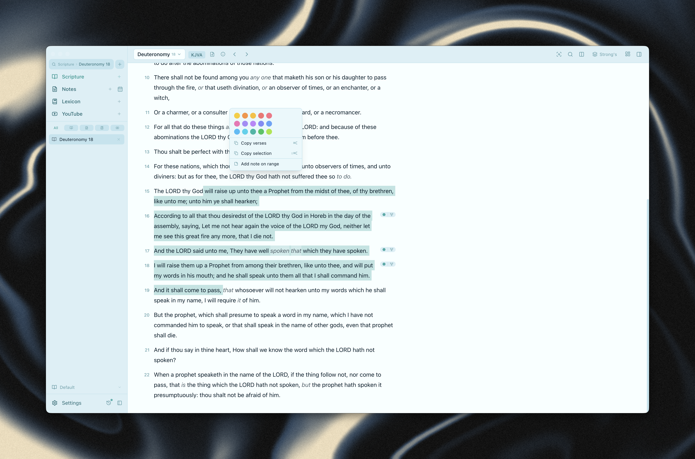

Local-first desktop Bible study for Yehovah's servants.
KJV + Apocrypha · Brenton LXX · 1 Enoch · Jubilees · Strong's Lexicon · Verse Notes · Full-Text Search · YouTube — all offline, no accounts.
macOS · Windows support coming

Scripture Reader — verse action popover with inline highlights and color picker
Read KJV+A, Brenton LXX, 1 Enoch, and Jubilees in resizable side-by-side panels. Verse-level compare across any combination of texts.
Inline Hebrew and Greek Strong's numbers with hover tooltips and full BDB/BDAG entries. Click any number to see every occurrence in Scripture.
Attach notes to any verse or keep freeform study documents. WYSIWYG markdown editor with heading collapse, bullet styles, and callouts.
Select any word or phrase and apply persistent color highlights. Five colors with suggested thematic uses. Highlights sync to vault files.
Search across all texts simultaneously using SQLite FTS5. Filter by testament, text, or book range. Word replacer expands searches automatically.
Sync notes as plain Markdown files to any local folder — Obsidian, Logseq, Octarine, or iCloud. Two-way sync with wikilink support.
Embedded YouTube browser with an allowlist, auto Picture-in-Picture, and one-click timestamp insertion into your active note.
Every major action has a shortcut. ⌘T opens any reference, ⌘G toggles Strong's, ⌘⇧N creates a note. No mouse required.